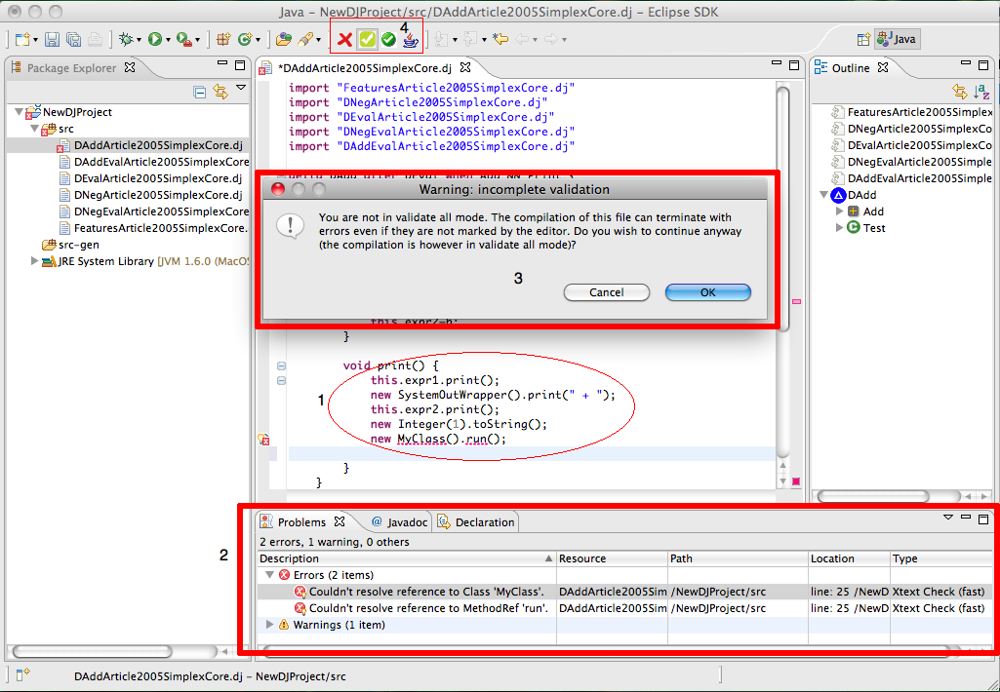

Validation
The user interface performs the code validation when you type something in the editor.
The validation includes:
- Syntax check
- Cross references check
- Check for duplicate elements
- Type-checking
- Other checks
The picture below shows the validation errors in the editor and in the bottom window.

When an error occurs (like in the point 1 of the image) it is marked and you can find the description
in the problem window (point 2 of the image).
The icon group in the point 4 of the image, can be used to select the detail level of the sources validation due to some expensive typechecking operations.
The cross icon button (at the left) if selected, indicates that the IDE will perform only syntax
and linking cheks. The button in the middle, indicates that only the not expensive typechecks will
be performed, while the last icon indicates that a complete validation will be done.
When you are not in the 'validate all' status and you try to generate a DeltaJ file, a dialog window
(point 3) will appear to inform you that, even if you have not any errors marked in the IDE, the compilation should anyway terminate with errors. This can happens because some checks are not enabled, while the compliler enable all the checks during the compilation.